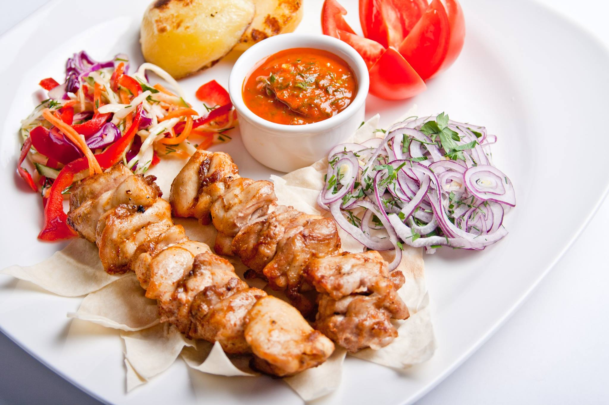
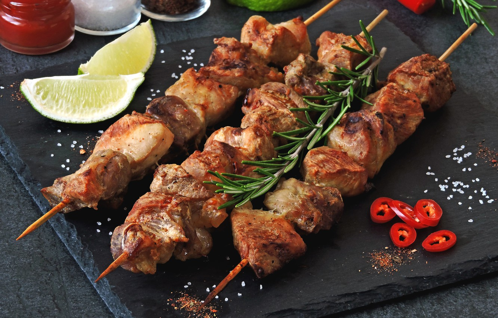
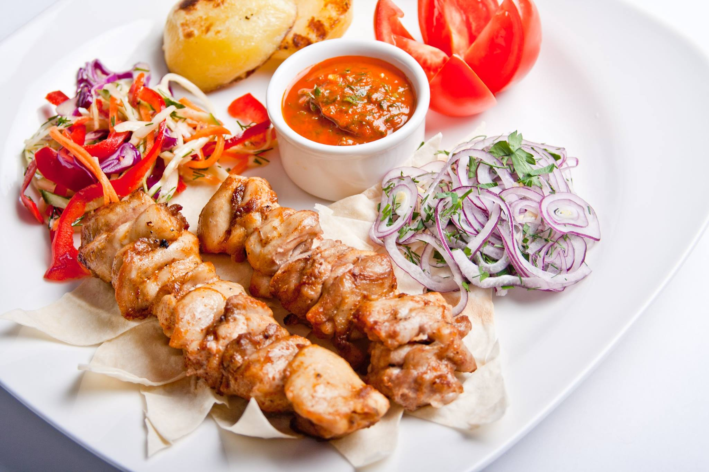
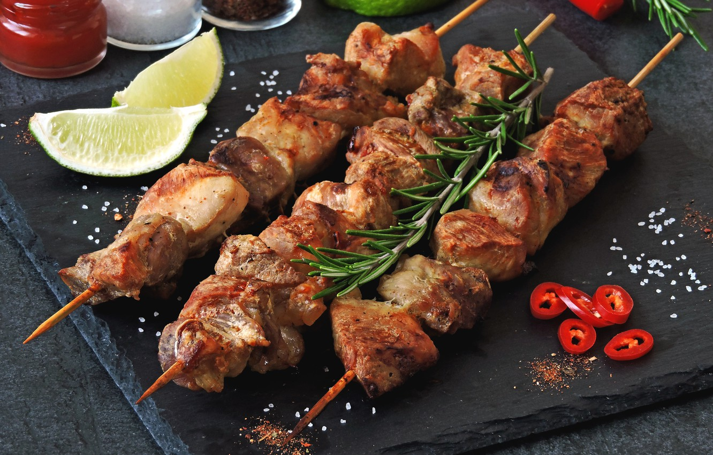

Время приготовления: 4 часа
Энергетическая ценность
- Жиры 185 грамм
- Углеводы 17 грамм
- Белки 47 грамм
ИНГРЕДИЕНТЫ:
- Лук репчатый 500 грамм
- Свинина с жирком 1000 грамм
- Уксус 3 чайных ложки
- Соль 1 столовая ложка
- Специи 3 столовых ложки
ПОШАГОВЫЙ РЕЦЕПТ
Подготовим и нарежем мясо


Первым делом - подготавливаем мясо к маринованию. Мясо должно быть комнатной температуры, поэтому выкладываем его из холодильника заранее. Перед нарезанием обязательно моем мясо. При нарезании мяса очень важно, чтобы куски получились не большими и не маленькими, т.к. в первом случаем мы рискуем получить не прожаренный внутри и сухой снаружи шашлык, а во втором – просто сухой. Идеальные куски – где-то 5х5 см, ну или около того.
Займемся луком


Далее займемся нарезанием лука. Вообще, мне кажется, что лук в маринаде играет чуть ли не основную роль после мяса, естественно. Он пропитывает мясо своим соком, делая его чрезвычайно нежным. Лук нарезаем тонкими полукольцами и добавляем к мясу.
Маринуем мясо


Засыпаем заранее приготовленными специями, в общей сложности на 1 кг мяса уходит где-то 2-3 столовые ложки без горки. Заливаем уксусным раствором (3 ч.л. уксуса 70% на стакан воды). Затем все перемешиваем, не стесняясь мнем мясо и лук. Накрываем чашку пищевой пленкой и оставляем настаиваться на пару часов.
Нанизываем на шампуры и жарим


Как только мясо замариновалось, нанизываем его на шампуры, желательно, чтобы кусочки были расположены вплотную друг к другу и имели максимально похожий размер – это важно для равномерного приготовления.
Шашлыки на шампурах. Угли готовы. Время жарить. Рекомендую переворачивать мясо не очень часто, чтобы оно не теряло свою сочность, но и не очень редко, чтобы не пришлось есть угольки. Хорошо промаринованное мясо готовится довольно быстро – минут 15-20.